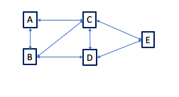

Graph - Depth First Search (DFS)

Algorithm
struct Node
{
std::string val;
std::list<Node*> children;
Node (const std::string& v)
: val(v)
{}
void print_self (std::ostream& os) const;
};
void dfs ( const Node* n1
,const Node* n2
,std::set<const Node*>& visited
,std::list<const Node*>& path)
{
if (n1 == n2)
{
std::cout << path << std::endl << std::endl;
return;
}
for (auto a = n1->children.begin(); a != n1->children.end(); a++)
{
if (visited.find(*a) == visited.end())
{
// yet to visit
visited.insert(*a);
path.push_back(*a);
dfs (*a, n2, visited, path);
path.pop_back();
visited.erase(*a);
}
}
}
void print_all_paths (const Node* n1, const Node* n2)
{
std::cout << "print_all_paths:"
<< " begin=" << *n1
<< " end=" << *n2
<< std::endl;
std::set<const Node*> visited;
std::list<const Node*> path;
path.push_back(n1);
visited.insert(n1);
dfs (n1, n2, visited, path);
}
int main (int argc, const char* argv[])
{
Node* a = new Node ("a");
Node* b = new Node ("b");
Node* c = new Node ("c");
Node* d = new Node ("d");
Node* e = new Node ("e");
a->children.push_back(b);
a->children.push_back(c);
b->children.push_back(a);
b->children.push_back(c);
b->children.push_back(d);
c->children.push_back(a);
c->children.push_back(b);
c->children.push_back(d);
c->children.push_back(e);
d->children.push_back(b);
d->children.push_back(c);
d->children.push_back(e);
e->children.push_back(c);
e->children.push_back(d);
print_all_paths (a, e);
return 0;
}